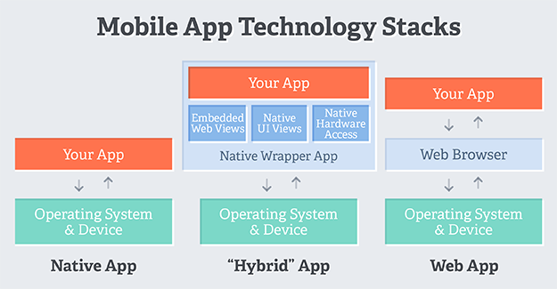
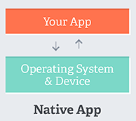
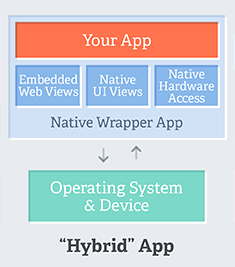
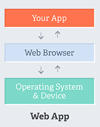
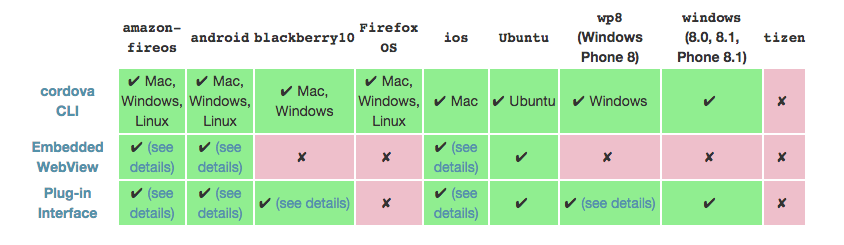

Overview
- Apache Cordova is an open-source mobile development framework
- Develop mobile apps with web technologies
- Relies on standard-compliant API bindings to access device "peripherals"
- Maintained and developed by the Apache Software Foundation
- Target multiple platforms with one code base
Why & When
- No need learning all platforms SDKs
- Wrap your web app within a mobile app
- Ease up your complex apps
Native & Hybrid & Web
Native
- Single plarform affinity
- Written with platform SDKs
- Must be written for each platform
- Access to all native APIs
- Faster graphics performance
- AppStore distribution
Hybrid
- Cross-platform affinity
- Written with web technologies
- Runs locally on the device, supports offline
- Access to all native APIs
- AppStore distribution
Web
- Cross-platform affinity
- Written with web technologies
- Runs on web server, viewable on multiple devices
- Centralized updates
- No AppStore distribution
Folder structure
.
├── config.xml
├── platforms
├── plugins
└── www
├── css
├── img
├── js
└── index.html
Basics
- Cordova relies on a common config.xml file that provides information and setting parameters.
- The app is implented as a web page, by default an index.html which is executed in a webview within the native app wrapper.
- A plugin interface is available to communicate with native components from the webview. This enable you to invoke native code from JS.
- Cordova only provides the runtime core.
- Cordova does not provide any UI resources or MV* framework.
Development Paths
Cross-Platform (CLI)
- Targets all platforms
- Workflow centered around the cordova utility (automatic building)
Platform Centered
- Lower level platform access
- Specific scripts & manual building for each platform
Platform Support
| Mac | Linux | Windows | |
| Amazon Fire | ✓ | ✓ | ✓ |
| Android | ✓ | ✓ | ✓ |
| Blackberry | ✓ | ✓ | ✓ |
| Firefox OS | ✓ | ✓ | ✓ |
| iOS | ✓ | ||
| Windows | ✓ | ||
| Windows Phone 8 | ✓ |
Platform Support
Command-Line Interface (CLI)
Installing cordova
$ npm install -g cordova
New project
$ cordova create hello com.example.hello HelloWorld
Add platforms
$ cd hello
$ cordova platform add {platform}
$ cordova platform ls {platform}
$ cordova platform remove|rm {platform}
Build app
$ cordova build {platform}
$ cordova prepare {platform}
$ cordova compile {platform}
Test app
$ cordova emulate {platform}
$ cordova run {platform}
Add Plugins
$ cordova plugin search {text}
$ cordova plugin add {plugin}
$ cordova plugin ls {plugin}
$ cordova plugin remove|rm {plugin}
Merges
.
└── merges
└── android
| ├── css
| | └── theme.css
| └── js
| └── android.js
└── ios
├── css
| └── theme.css
└── js
└── ios.js
config.xml
HelloWorld
A sample Apache Cordova application that responds to
the deviceready event.
Apache Cordova Team
preference
hooks
after_build after_compile after_clean
after_docs after_emulate after_platform_add
after_platform_rm after_platform_ls after_plugin_add
after_plugin_ls after_plugin_rm after_plugin_search
after_plugin_install after_prepare after_run
after_serve before_build before_clean
before_compile before_docs before_emulate
before_platform_add before_platform_rm/ before_platform_ls
before_plugin_add before_plugin_ls before_plugin_rm
before_plugin_search/ before_plugin_install before_plugin_uninstall
before_prepare before_run before_serve
pre_package // Windows and Windows Phone only
Development
Cordova events
- deviceready
- pause
- resume
- backbutton
- menubutton
- searchbutton
- startcallbutton
- endcallbutton
- volumedownbutton
- volumeupbutton
Cordova events
Storage
- LocalStorage
- WebSQL
- IndexedDB
- Plugin-Based Options
Plugins
- Battery Status
- Camera
- Console
- Contacts
- Device
- Device Motion (Accelerometer)
- Device Orientation (Compass)
- Dialogs
- FileSystem
- File Transfer
- Geolocation
- Globalization
- InAppBrowser
- Media
- Media Capture
- Network Information (Connection)
- Splashscreen
- Vibration
- StatusBar
- Whitelist
- Legacy Whitelist
cordova.apache.org/docs
Thanks!